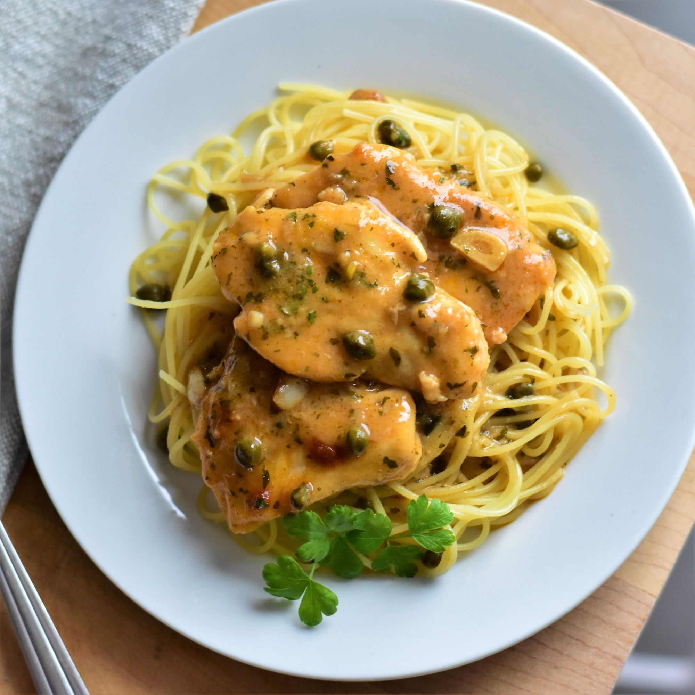

Chicken Piccata

Description
Fried chicken breast served over pasta with a lemony caper sauce.
Ingredients
- 2 boneless chicken breast, butterflied and then cut in half
- Sea salt and freshly ground black pepper
- All-purpose flour
- 6 tablespoons unsalted butter
- 5 tablespoons olive oil
- 1/3 cup lemon juice
- 1/2 cup chicken stock
- 1/4 cup capers
- 1/3 cup parsley
Steps
- Season chicken with salt and pepper. Dredge chicken in flour and shake off excess.
- In a large skillet over medium high heat, melt 2 tablesoons of butter with 3 tablespoons of olive oil.
When the butter and oil start to sizzle, add 2 pieces of chicken and cook for 3 minutes.
When chicken is browned, flip and cook other side for 3 minutes.
Remove pan from heat and ass chicken to the plate.
- Into the pan add the lemon juice, stock, and capers.
Return to stove and bring to boil, scraping up brown bits for the pan for extra flavor.
Return all the chicken to the pan and simmer for 5 minutes.
Remove chicken to platter. Add 2 tablespoons of butter to sauce and wisk vigorously. Pour sauce over chicken.